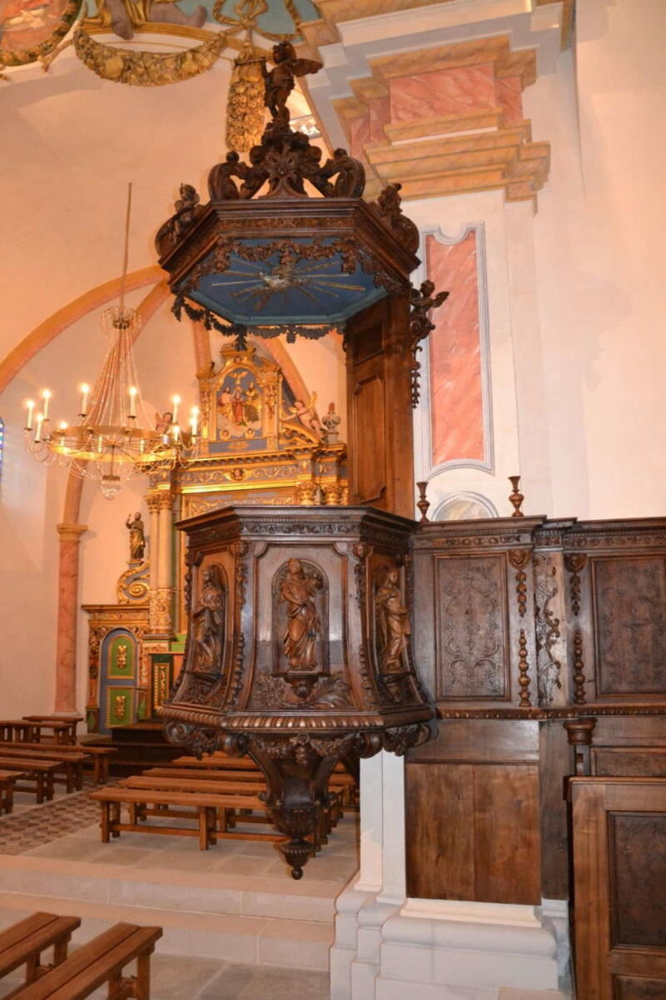
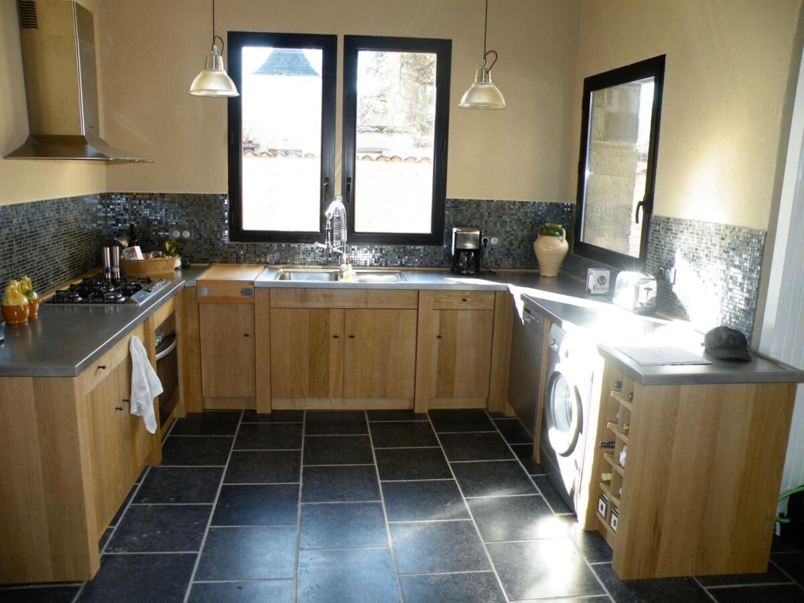
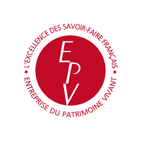
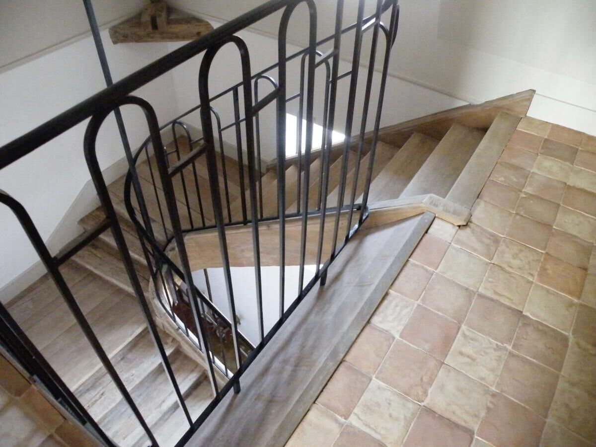

Menuisier &Compagnons
Une équipe de compagnons reconnus pour leurs capacités à transcrire un projet en adéquation avec la réalisation attendue — de l’architecture contemporaine jusqu’aux Monuments Historiques.
Menuiserie, agencement et ébénisterie, du contemporain au patrimoine
La pertinence d’analyse du projet permet d’aboutir à la mise en œuvre de solutions techniques innovantes conduisant à un rendu de qualité.
Notre structure est qualifiée pour étudier, concevoir et réaliser des ouvrages de menuiserie, d’agencement et d’ébénisterie pour des projets d’inspiration d’architecture contemporaine, de bâtiments du patrimoine, jusqu’aux travaux de restauration de menuiserie dans les Monuments Historiques (M.H.).
Notre métier nous amène à travailler les bois de différentes essences, les panneaux techniques mais également les produits connexes comme les vernis, les patines, les laques, le métal, le verre…
« Rien n’est impossible si nous mobilisons les savoir-faire de notre équipe à trouver les solutions à l’expression de votre projet ».
au service de belles réalisations.


Cinq savoir-faire, une même exigence
Concilier, sans concession, patrimoine et modernité
« Ayant à cœur d’inscrire le plus subtilement possible nos menuiseries dans vos demeures, nous nous attachons à respecter le plus finement possible les proportions de vos portes et fenêtres, tout en alliant des performances techniques avancées. »
Les deux montants centraux s’emboîtent : le profil convexe (le « mouton ») vient se loger dans le profil creusé (la « gueule de loup »). C’est la jonction traditionnelle des fenêtres anciennes.
Nos menuiseries historiques à mouton gueule de loup, à noix et contre-noix ont obtenu à l’essai au banc AEV le classement :
Classement repris du site actuel. Les jauges illustrent la position dans chaque échelle normalisée ; libellés à valider avec vous.
Quelques ouvrages de l’atelier
Du dressing aux magasins de prêt-à-porter, d’une cuisine à une chocolaterie, d’un château à un musée : filtrez par métier, cliquez pour agrandir.
Décrivez votre projet en quelques clics
Architecte, maître d’ouvrage, particulier ou commerçant : précisez le type d’ouvrage, le bâtiment et vos contraintes. Une fiche projet claire se compose à droite, prête à nous être envoyée — l’équipe revient vers vous avec les bonnes questions dès le premier échange.
Nos certifications

Entreprise du Patrimoine Vivant
Label d’État distinguant les entreprises au savoir-faire rare, renommé ou ancestral.
Qualibat
Qualification professionnelle du bâtiment, affichée sur le site actuel.
Reconnu Garant de l’Environnement
Mention affichée sur le site actuel.
Infiniment Luxe
Groupement d’artisans d’exception en Auvergne-Rhône-Alpes.

Faire vivre et perdurer les techniques traditionnelles
Travaillant très régulièrement sur des bâtiments classés ou inscrits au titre des Monuments Historiques, nos compagnons expérimentés transmettent leurs techniques à nos jeunes apprentis, menuisiers et ébénistes en formation.
Vous souhaitez rejoindre l’équipe ? Pour toute candidature, passez par notre formulaire de contact.
CandidaterParlons de votre projet
Menuisier et Compagnons
Z.A Les Oddins
42640 Saint-Germain-Lespinasse
Préparer mon projet en ligne →
Instagram @menuisieretcompagnons